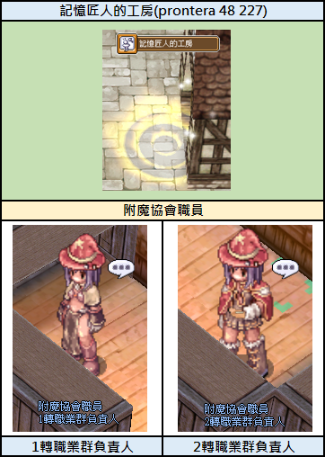
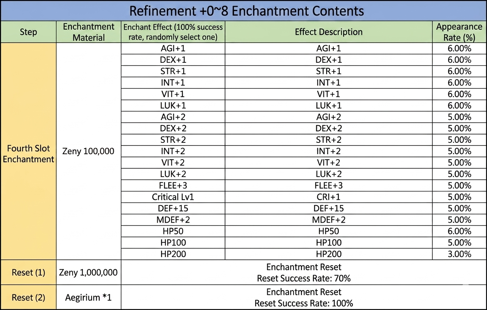
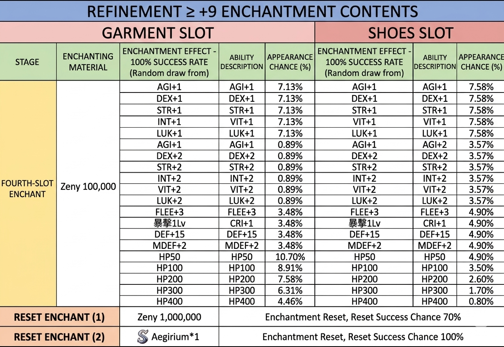
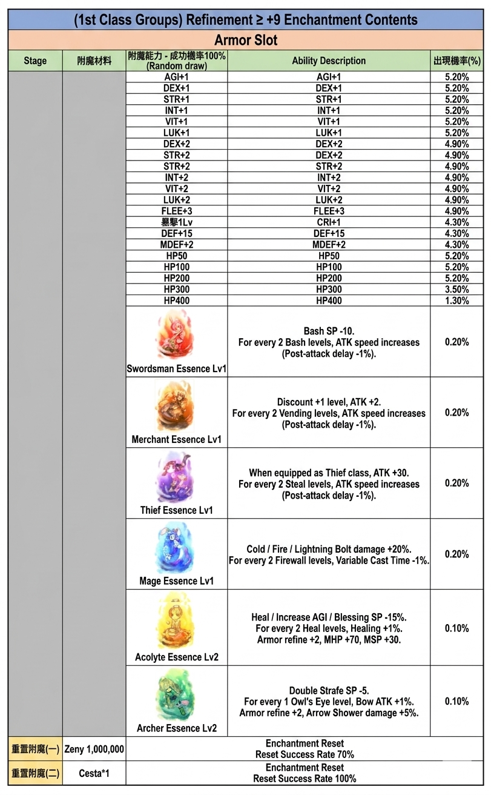
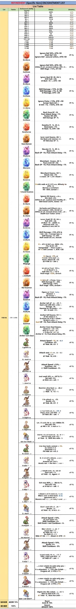

Expedition Squad Enchant (遠征隊-專屬附魔)
Exklusive Enchants für das 70MD-Equipment der Expedition-Squad-Memorial-Dungeons — die mittlere Progressionsstufe.
📍 NPC & Standort
Enchant Association (附魔協會) — Expedition-Filiale
Position: prt_in 135/28
Navigate: /navi prt_in 135/28
Funktion: Enchantet Memorial-Dungeon-Equipment mit dem Expedition-Squad-Pool.

📋 NPC-Standorte in der Werkstatt des Erinnerungsschmieds — Deutsch aufklappen
Dieses Bild zeigt den Standort der 'Werkstatt des Erinnerungsschmieds' in Prontera sowie zwei NPCs für Verzauberungen, die für Jobs der 1. und 2. Klasse zuständig sind.
- Location: Memory Artisan's Workshop (prontera 48 227)
- NPC: Enchantment Association Staff - Person in charge of 1st Class Jobs
- NPC: Enchantment Association Staff - Person in charge of 2nd Class Jobs
Die Karte befindet sich in Prontera bei den Koordinaten 48 227. Die abgebildeten NPCs sind für die Verzauberung von Ausrüstung zuständig, unterteilt nach Klassenrang.
🎯 Zielausrüstung
Dieser Pool ist für das 70er-Memorial-Dungeon-Equipment der Expedition Squad-Serie. Parallele Pools:
- 60MD Subjugation Enchant (征伐隊)
- 80MD Annihilation Enchant (殲滅隊)
📋 Ability-Listen
Alle verfügbaren Enchants in den offiziellen Tabellen:

📋 Verzauberungsinhalte für Veredelungsgrad +0~8 — Deutsch aufklappen
Diese Tabelle zeigt die möglichen Effekte und Wahrscheinlichkeiten für die vierte Slot-Verzauberung bei Ausrüstungsgegenständen mit einem Veredelungsgrad zwischen +0 und +8, sowie die Kosten für das Zurücksetzen.
| Schritt | Verzauberungsmaterial | Verzauberungseffekt (100% Erfolgsrate, zufällige Auswahl) | Effektbeschreibung | Erscheinungsrate (%) |
|---|---|---|---|---|
| Fourth Slot Enchantment | Zeny 100,000 | AGI+1 | AGI+1 | 6.00% |
| Fourth Slot Enchantment | Zeny 100,000 | DEX+1 | DEX+1 | 6.00% |
| Fourth Slot Enchantment | Zeny 100,000 | STR+1 | STR+1 | 6.00% |
| Fourth Slot Enchantment | Zeny 100,000 | INT+1 | INT+1 | 6.00% |
| Fourth Slot Enchantment | Zeny 100,000 | VIT+1 | VIT+1 | 6.00% |
| Fourth Slot Enchantment | Zeny 100,000 | LUK+1 | LUK+1 | 6.00% |
| Fourth Slot Enchantment | Zeny 100,000 | AGI+2 | AGI+2 | 5.00% |
| Fourth Slot Enchantment | Zeny 100,000 | DEX+2 | DEX+2 | 5.00% |
| Fourth Slot Enchantment | Zeny 100,000 | STR+2 | STR+2 | 5.00% |
| Fourth Slot Enchantment | Zeny 100,000 | INT+2 | INT+2 | 5.00% |
| Fourth Slot Enchantment | Zeny 100,000 | VIT+2 | VIT+2 | 5.00% |
| Fourth Slot Enchantment | Zeny 100,000 | LUK+2 | LUK+2 | 5.00% |
| Fourth Slot Enchantment | Zeny 100,000 | FLEE+3 | FLEE+3 | 5.00% |
| Fourth Slot Enchantment | Zeny 100,000 | Critical Lv1 | CRI+1 | 5.00% |
| Fourth Slot Enchantment | Zeny 100,000 | DEF+15 | DEF+15 | 5.00% |
| Fourth Slot Enchantment | Zeny 100,000 | MDEF+2 | MDEF+2 | 5.00% |
| Fourth Slot Enchantment | Zeny 100,000 | HP50 | HP50 | 6.00% |
| Fourth Slot Enchantment | Zeny 100,000 | HP100 | HP100 | 5.00% |
| Fourth Slot Enchantment | Zeny 100,000 | HP200 | HP200 | 3.00% |
| Reset (1) | Zeny 1,000,000 | Enchantment Reset | Reset Success Rate: 70% | - |
| Reset (2) | Aegirium *1 | Enchantment Reset | Reset Success Rate: 100% | - |
Die Tabelle beschreibt die vierte Slot-Verzauberung für Gegenstände mit Refine +0 bis +8. Das Zurücksetzen der Verzauberung ist entweder gegen Zeny (mit 70% Erfolgsrate) oder mit Aegirium (mit 100% Erfolgsrate) möglich.

📋 Verzauberungsinhalte für Ausrüstung mit Veredelung >= +9 — Deutsch aufklappen
Diese Tabelle zeigt die möglichen Effekte, Erfolgschancen und Kosten für die Verzauberung des vierten Slots bei Garment und Shoes ab einer Veredelung von +9.
| Stufe | Verzauberungsmaterial | Garment Slot Effekt | Garment Slot Beschreibung | Garment Slot Chance (%) | Shoes Slot Effekt | Shoes Slot Beschreibung | Shoes Slot Chance (%) |
|---|---|---|---|---|---|---|---|
| FOURTH-SLOT ENCHANT | Zeny 100,000 | AGI+1 | AGI+1 | 7.13% | AGI+1 | AGI+1 | 7.58% |
| FOURTH-SLOT ENCHANT | Zeny 100,000 | DEX+1 | DEX+1 | 7.13% | DEX+1 | DEX+1 | 7.58% |
| FOURTH-SLOT ENCHANT | Zeny 100,000 | STR+1 | STR+1 | 7.13% | STR+1 | STR+1 | 7.58% |
| FOURTH-SLOT ENCHANT | Zeny 100,000 | INT+1 | VIT+1 | 7.13% | INT+1 | VIT+1 | 7.58% |
| FOURTH-SLOT ENCHANT | Zeny 100,000 | LUK+1 | LUK+1 | 7.13% | LUK+1 | LUK+1 | 7.58% |
| FOURTH-SLOT ENCHANT | Zeny 100,000 | AGI+1 | AGI+1 | 0.89% | AGI+1 | AGI+2 | 3.57% |
| FOURTH-SLOT ENCHANT | Zeny 100,000 | DEX+2 | DEX+2 | 0.89% | DEX+2 | DEX+2 | 3.57% |
| FOURTH-SLOT ENCHANT | Zeny 100,000 | STR+2 | STR+2 | 0.89% | STR+2 | STR+2 | 3.57% |
| FOURTH-SLOT ENCHANT | Zeny 100,000 | INT+2 | INT+2 | 0.89% | INT+2 | INT+2 | 3.57% |
| FOURTH-SLOT ENCHANT | Zeny 100,000 | VIT+2 | VIT+2 | 0.89% | VIT+2 | VIT+2 | 3.57% |
| FOURTH-SLOT ENCHANT | Zeny 100,000 | LUK+2 | LUK+2 | 0.89% | LUK+2 | LUK+2 | 3.57% |
| FOURTH-SLOT ENCHANT | Zeny 100,000 | FLEE+3 | FLEE+3 | 3.48% | FLEE+3 | FLEE+3 | 4.90% |
| FOURTH-SLOT ENCHANT | Zeny 100,000 | CRI+1 | CRI+1 | 3.48% | CRI+1 | CRI+1 | 4.90% |
| FOURTH-SLOT ENCHANT | Zeny 100,000 | DEF+15 | DEF+15 | 3.48% | DEF+15 | DEF+15 | 4.90% |
| FOURTH-SLOT ENCHANT | Zeny 100,000 | MDEF+2 | MDEF+2 | 3.48% | MDEF+2 | MDEF+2 | 4.90% |
| FOURTH-SLOT ENCHANT | Zeny 100,000 | HP50 | HP50 | 10.70% | HP50 | HP50 | 4.90% |
| FOURTH-SLOT ENCHANT | Zeny 100,000 | HP100 | HP100 | 8.91% | HP100 | HP100 | 3.50% |
| FOURTH-SLOT ENCHANT | Zeny 100,000 | HP200 | HP200 | 7.58% | HP200 | HP200 | 2.60% |
| FOURTH-SLOT ENCHANT | Zeny 100,000 | HP300 | HP300 | 6.31% | HP300 | HP300 | 1.70% |
| FOURTH-SLOT ENCHANT | Zeny 100,000 | HP400 | HP400 | 4.46% | HP400 | HP400 | 0.80% |
Die Tabelle listet die Wahrscheinlichkeiten für Verzauberungen im vierten Slot auf. Reset-Optionen bieten unterschiedliche Erfolgschancen basierend auf den Kosten (Zeny vs. Aegirium).

📋 Verzauberungstabelle für Rüstungs-Slots (1. Klassen-Gruppen, Verfeinerung ≥ +9) — Deutsch aufklappen
Diese Tabelle listet die möglichen Verzauberungsboni und deren Auftrittswahrscheinlichkeiten für Rüstungen von Charakteren der 1. Klasse mit einer Verfeinerung von mindestens +9 auf.
| Stufe | Verzauberungsmaterial | Fähigkeits-Bezeichnung (Zufällige Ziehung) | Fähigkeitsbeschreibung | Auftrittswahrscheinlichkeit (%) |
|---|---|---|---|---|
| AGI+1 | AGI+1 | 5.20% | ||
| DEX+1 | DEX+1 | 5.20% | ||
| STR+1 | STR+1 | 5.20% | ||
| INT+1 | INT+1 | 5.20% | ||
| VIT+1 | VIT+1 | 5.20% | ||
| LUK+1 | LUK+1 | 5.20% | ||
| DEX+2 | DEX+2 | 4.90% | ||
| STR+2 | DEX+2 | 4.90% | ||
| STR+2 | STR+2 | 4.90% | ||
| INT+2 | INT+2 | 4.90% | ||
| VIT+2 | VIT+2 | 4.90% | ||
| LUK+2 | LUK+2 | 4.90% | ||
| FLEE+3 | FLEE+3 | 4.90% | ||
| CRI+1 | CRI+1 | 4.30% | ||
| DEF+15 | DEF+15 | 4.30% | ||
| MDEF+2 | MDEF+2 | 4.30% | ||
| HP50 | HP50 | 5.20% | ||
| HP100 | HP100 | 5.20% | ||
| HP200 | HP200 | 5.20% | ||
| HP300 | HP300 | 3.50% | ||
| HP400 | HP400 | 1.30% | ||
| Swordsman Essence Lv1 | Swordsman Essence Lv1 | Bash SP -10. For every 2 Bash levels, ATK speed increases (Post-attack delay -1%). | 0.20% | |
| Merchant Essence Lv1 | Merchant Essence Lv1 | Discount +1 level, ATK +2. For every 2 Vending levels, ATK speed increases (Post-attack delay -1%). | 0.20% | |
| Thief Essence Lv1 | Thief Essence Lv1 | When equipped as Thief class, ATK +30. For every 2 Steal levels, ATK speed increases (Post-attack delay -1%). | 0.20% | |
| Mage Essence Lv1 | Mage Essence Lv1 | Cold / Fire / Lightning Bolt damage +20%. For every 2 Firewall levels, Variable Cast Time -1%. | 0.20% | |
| Acolyte Essence Lv2 | Acolyte Essence Lv2 | Heal / Increase AGI / Blessing SP -15%. For every 2 Heal levels, Healing +1%. Armor refine +2, MHP +70, MSP +30. | 0.10% | |
| Archer Essence Lv2 | Archer Essence Lv2 | Double Strafe SP -5. For every 1 Owl's Eye level, Bow ATK +1%. Armor refine +2, Arrow Shower damage +5%. | 0.10% | |
| Verzauberungsrücksetzung (I) | Zeny 1,000,000 | Enchantment Reset: Reset Success Rate 70% | ||
| Verzauberungsrücksetzung (II) | Jesta*1 | Enchantment Reset: Reset Success Rate 100% |
Die Tabelle beschreibt Verzauberungsoptionen für Rüstungsgegenstände. Es gibt zwei Optionen für das Zurücksetzen der Verzauberung mit unterschiedlichen Erfolgsraten und Materialkosten.

📋 Verfeinerungs-Verzauberungsliste — Deutsch aufklappen
Eine tabellarische Auflistung von Verfeinerungs-Verzauberungen für spezifische Gegenstände in Ragnarok Zero, einschließlich ihrer Effekte und Erfolgswahrscheinlichkeiten.
| Liste | Tabelle | Verzauberungs-Fähigkeit | Effekte | Wahrscheinlichkeit |
|---|---|---|---|---|
| FOR W | 2H | Enndows | Ignore Def 50%, ATK +50 | FT % |
| Enndows | Ignore Def 50%, ATK +50 | FT % | ||
| Eunitwas | Ignore Def 50%, ATK 5, Skill Dmg +25%, ATK +50 | FT % | ||
| Enndows | Skill Damage +15%, A+50, Skill Damage +1%, ATK +30 | FT % | ||
| Enndows | Ignore Def 50%, ATK +50, INT +15, +155%, ATK -50 | FT % | ||
| Eunthars | Post Attack Delay -1%, Recizer BN -40%, Skill Damage 3% - % | FT % | ||
| Narafverse | At Bash 15, ATK +50 | FT % | ||
| Swordsman | Bash SP -10, Post-Attack Delay -1% | FT % | ||
| Mudons | Bash SP -10, Post-Attack Delay -1% | FT % | ||
| Marcwns | Bash SP -10, Post-Attack Delay -1% | FT % | ||
| Eavence | Basch rate +5%, Ecliasse -SP +1 | FT % | ||
| Yishand Essence | Bernes customer +100% | FT % | ||
| Eentums | Ignore Hit Essenc, Skill Dmg +6%, Skill Dmg +15% | FT % | ||
| Eridons | Iris bache and Ciliandi, Skill Dmg +10%, BatlN ldef Vratin winte | FT % | ||
| Evrduns | Bash SP -10, Post-Attack Delay -1% | FT % | ||
| Unituns | Skill Damage +15%, ATK & MATK +15, -15%, Reff geist als unk | FT % | ||
| Evnduce | ATK & MDEF +2%, FTL IS +20, Insgratad - Hnox bame +13, ATK +30 | FT % | ||
| Magage | St-Ing an +5%, Fronde +3%, Attaok SF +2%, ATK +300 | FT % | ||
| L.avoltyte | Retlf mage +23% | FT % | ||
| Rol Essence | Skill Damage +20%, Skill Range +10%, Reff mage +20% | FT % | ||
| Essence | Bash SP -10, Post-Attack Delay -1% | FT % | ||
| Acckute | Archer tail aF, Dash and CON, Running +15% | FT % | ||
| Essence | Bash SP -10, Post-Attack Delay 1% | FT % | ||
| Archer Core Soul | Archer Core Soul Essenc, ATK +30%, AGI +10, Post-Attack Delay 0% | FT % | ||
| S goblin ra | Attack Speed +10%, ATK -7 | FT % | ||
| E: muit ra | Attack seal +3, ATK -10 | FT % | ||
| Warrorr ra | Attack Speed +10%, Skill Cooldown -5% | FT % | ||
| I.1 murt re | ATK +1 | FT % | ||
| 4 1 agolt tu | ATK -0 | FT % | ||
| 9.3 ghult ro | Roodh +3%, ATK -2 | FT % | ||
| 3 exgoit te | ATK -1 | FT % | ||
| 6. onguft te | Res nalt +0% | FT % | ||
| Vim Gor Moelt | ATK -0, Skill Mts anfs +% | FT % | ||
| R: rnnct | PH NAK arn +4% | FT % | ||
| A siler | Acolic nai +3.82 | FT % | ||
| B.orgust | ATK -K, Agent +1 | FT % | ||
| 5 Mar 7 | ATK -1 | FT % | ||
| L. Niter | Norettn mat +% | FT % | ||
| S: thrt | ATK -8 | FT % | ||
| A omglaf | Attack Speed +10%, Skill Cooldown -5% | FT % | ||
| A.N Buntor | NSK HIT +3, Siliost 50 ATK +5 | FT % | ||
| k 300119 | Attack Speed +10%, Skill Cooldown -5% | FT % | ||
| F midt | ATK -1 | FT % | ||
| Fausct | Forgore ref. 2 STK & 1% | FT % | ||
| F oharr | Forgore ref. 2 STK & 0% | FT % | ||
| 6LAR BOS7 | ATK -K | FT % |
Die Fußzeile enthält Reset-Informationen (Wahrscheinlichkeit 70% bzw. 100%).
💡 Praxis-Tipps
- 70MD als Pflicht: Der Expedition-Enchant ist nur sinnvoll, wenn das 70MD-Equipment vorhanden ist — Zugang erhältst du via Memorial-Dungeons
- Enchant-Slots bedacht füllen: Einige Slots sind class-spezifisch sinnvoll — Build planen, dann enchanten
- Progressions-Upgrade: Nach 70MD ist 80MD der nächste Sprung — Blick auf Annihilation-Pool lohnt sich bereits während 70MD-Farm
⚠️ Hinweise
- Gravity behält sich Änderungen vor.
- Aktueller Stand stets auf der Originalseite.